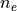
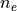
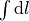
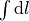
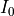
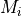

Sunyaev-Zel’dovich effect extension: Basics
Since the work of Beauchesne et al. 2023
, Lenstool is able to use X-ray data to model the intra-cluster gas (see X-ray extension).
In a similar fashion, we can use the Sunyaev-Zel’dovich (SZ) effect, observed in submillimetre frequencies, to constrain the properties of the intra-cluster medium (ICM).
This SZ effect (SZE) is can be added to the lenstool parameter file by adding one section, and selecting the SZE-bright potential with keyword SZE.
Theoretical preliminary
The CMB photons are permanently bathing the Universe. As a result, they can occasionally interact with physical objects at an observable scale. The thermal, non-relativistic, hot electrons of the ICM create the condition for an inverse Compton scattering: in a spectral band-width of CMB photons, one can observe the broadening of the band due to the Doppler effect. Therefore, cold or hot spots in CMB surveys such as Planck or ACT (Atacama Cosmology Telescope) may reveal the presence of the ICM associated with galaxy clusters. This effect was first described in Sunyaev and Zel’dovich 1970a, b.
Given a CMB temperature K today, we introduce the reduced frequency is defined as:
where
 is the Boltzmann constant,
is the Boltzmann constant,
 is the Planck constant and
is the Planck constant and
 is the measured frequency.
We also introduce the Compton parameter
is the measured frequency.
We also introduce the Compton parameter
 :
:
where
the electron mass,
 the celerity of light,
the Thomson cross-section,
 the ICM electron number density,
the celerity of light,
the Thomson cross-section,
 the ICM electron number density,
 the ICM electron temperature and
 the integral over the line-of-sight.
the ICM electron temperature and
 the integral over the line-of-sight.
We can also define the electron optical depth :
We can now write the SZE temperature contrast:
where is the SZE spectral temperature contrast, is the SZE spectral intensity shift and  the spectral intensity of the CMB.
Note
WARNING: Please notice that this only describes the thermal SZ effect (tSZE). The kinematic and polarisation SZE are a priori much fainter, but may create offsets in the data.
How it works
This extension to lenstool computes a map of
for a potential, which allows to constraint the shape of the gas haloes with the SZE data maps, and to produce the related quantities as map.
For now, only the dPIE and idPIE
potentials are implemented.
A temperature
map can be given as an input, or we can use different polytropic temperatue laws (detailed in the Temperature profiles section).
Density profiles
dPIE Profile
The ICM corresponding to the dPIE profile (see Supported Potentials) for the SZE simply describes the gas density as a dPIE, independant of any other parameter. Therefore, it uses the same description as other dPIE potentials.
idPIE Profile
See section idPIE profile description.
Temperature profiles
See section ICM Temperature models.
Example of Potential
The potential keyword presents two additional parameters: SZE and Gas_fraction.
SZE,bool: 1 if dPIE SZE-bright, 2 for idPIE SZE-bright, 0 otherwise. Default: 0.Gas_fraction,float: Fraction of gas (multiplying the density, between 0 and 1). Default: 1.
potential O1
profile 81
SZE 1
Gas_fraction 1.
x_centre 0.
y_centre 0.
ellipticity 0.5
angle_pos 0.
core_radius_kpc 100
cut_radius_kpc 2500.
v_disp 1000.
z_lens 0.3
end
limit O1
x_centre 1 -10. 5. 0.01
cut_radius_kpc 1 500. 10000. 100.
end
SZE optimisation parameters
This SZE extension adds a lenstool keyword to the parameter file, to input the specific parameters.
Three maps must be provided, in order to compute the observed Compton parameter
:
Contrast Temperature map
SZE_mapin the submillimetre spectrum, measuring the SZE effect.Standard deviation of the measured contrast Temperature map
std_map.Temperature map
Temperature_mapof the ICM of the cluster. This is the temperature of the cluster, not of the scattered CMB photons. This map can be replaced by an analytical temperature model (seeTemp0andJz_array).
We give an example of the SZE section:
SZE
pixel_area 0.00833333
Optimisation 1
Optimisation_z 0.4
Temp0 13.4 # keV
Jz_array 1 polyE Jz_polyE_z0.4000.csv # 'polyE' is the default.
Gauss_stat_norm 252.2 # = N_PIX_SZ/N_IM_SL (for instance)
psf 3 ACT_PSFmap.fits
frequency 150. # GHz
SZE_map 3 f150_map_filtered_0.05.fits
std_map 6 f150_ivar.fits
beam 1 s16_pa2_f150_nohwp_night_beam_profile_jitter.txt
model_type 0
end
where:
frequency,float: frequency of measurement the SZE map, in . Default: 0. Note: several frequencies (from a same telescope) can be input together as{float1,float2}.SZE_map,int: 1 if the map is in Compton parameter, 2 for a CMB temperature contrast in , 3 for a CMB temperature in , 0 to switch off. Default: 0. string: Path of the temperature contrast map. Note: several maps (from a same telescope, with the sameintunit) can be input together as{string1,string2}.
Note
TO DO: multiple maps with a same command.
Std_map,int: 1 if the map is in Compton parameter, 2 for a CMB temperature contrast in , 3 for a CMB temperature in , 6 for a map in inverse variance in , 0 to switch off. Default: 0. string: Path of the measured standard deviation of the temperature contrast. Note: several maps (from a same telescope, with the sameintunit) can be input together as{string1,string2}.Temperature_map,int: 1 if the ICM temperature map is in , 2 if the map is in , 0 to switch off. Default: 0.string: Path of the measured ICM electron temperature map. If intis not 0, this overrides any analytical temperature model.pixel_area,float: pixel size for all maps (must be identical), in . Default: 1.Optimisation,bool: 1 or 0 to activate/deactivate the SZE optimisation, through likelihood optimisation. Default: 0.Optimisation_z,float: redshift of the ICM. Default: 0.Temp0,float: pivot temperature in , in case of an analytical ICM temperature model. Default: 0. For more details, see Temperature profiles.Jz_array,bool: 1 or 0 to compute/not compute the array, necessary to use a hydrostatic
array, necessary to use a hydrostatic idPIEICM density profile (see idPIE Profile). Default: 0.string: temperature model (see Temperature profiles). Default:polyE.string: name of the output array. If the array is not computed (0), this array must already exist, if the user is using idPIE profiles (keywordSZE 2, in combination withprofile 81in Example of Potential).Gauss_stat_norm,float: Normalisation of the log-likelihood of the SZE. For instance, setting this parameter to 10 multiplies the SZE Gaussian log-likelihood by a factor 1/10. Default: 1.
psf, TO DObeam,bool: 1 if there is a dispersion beam to take into account in the maps, 0 otherwise. Default: 0.string: filename of the beam.model_type,int: 0 for a simple Gaussian model, where the model std is considered to be 0. 1 for a model std equal to the model SZE value itself. Default: 0. (TO DO.)
SZE Optimisation
The optimisation is performed through a Monte Carlo method, with the Markov Chains Monte Carlo engine bayeSys implemented in the Lenstool C code or through any optimiser with the Python wrapper of the Lenstool C library. The Gaussian log-likelihood writes:
where:
 is the model value in the
 -th pixel,
-th pixel, is the detected value in the -th pixel (provided through
is the detected value in the -th pixel (provided through SZE_map) andis the standard deviation in the
-th pixel. If model_type = 0, it is simply the value provided throughStd_map. Ifmodel_type = 1, then .
SZE Python optimisation
Note
TO DO
X-ray compatibility
As the ICM observed through X-ray and SZE is the same baryonic medium, the parameters used to describe both should be identical (Temparature model, density profile, etc.).
Note
TO DO: TO COMPLETE. The following is just the X-ray template to adapt.
At the end of the optimisation or at the production of a chires.dat file, the code will generate the three following maps: - Xray_model_counts.fits: Maps that has the same size has the imput maps and contains in each pixel the value of the best-fit count model. - Xray_residual_counts.fits : Same as before, but with the residual (i.e. Data-model) - Xray_loglikelihood_pix.fits : Same as before, but each pixel contains the value of the loglikelihood associated.
These allows you to see the best-fit count model and see which part of the field are badly/betterly reproduced. These map can be created for other models than the best as long as you have a parameter file for them by using the usual lenstool method to produce map, which is by specifying them in the runmode section with the following lines: - X-ray 2 0 z_lens Xray_model_counts.fits - X-ray 3 0 z_lens Xray_residual_counts.fits - X-ray 4 0 z_lens Xray_loglikelihood_pix.fits
These lines have to be used one by one, as lenstool does not have the hability to create multiple maps of the same keywords at the same time. Here, the size of the maps are defined by the input maps, so the integer related to the number of pixel per row and column is 0.
In addition, other quantity related to the best-fit model can be found in the chires.dat that contains will contains the usual lines associated with the other likelihood defined such as the lensing one. Here is an example of the X-ray lines:
`
chi X-ray surface brightness
N_pixel 16900
Cash_Statistic -437152.56002
Cstat 4661.77537
log(likelihood) -33189.73608
Monte Carlo estimation of the quality of the fit: Mean: -32915.46507 Std: 87.35700
Interval 1 sigma: min -> -33002.06100 ||max -> -32829.06987
Interval 3 sigma: min -> -33177.52215 ||max -> -32648.07052
Interval 5 sigma: min -> -33255.71946 ||max -> -32599.59211
`
Where N_pixel contains the total number of pixel, the Cash_Statistic is equal to $-2timeslogleft(mathcal{L}right)$ (Correct definition if $sigma_{X}=0$). The Cstat is defined as follows:
$text{Cstat}=sum^{rm N_{pixel} }_{rm i} 2(M_i-D_i+D_ilogleft(frac{D_i}{M_i}right))$
It is similar to the one implemented in Xspec or Sherpa. In case $M_i=0$, we replace the previous term in the sum by $2 D_i$. We added these two other likelihoods to provide a comparison with other X-ray fitting software. These lines also contains the results of the goodness of fit procedure presented in [Beauchesne+23](https://ui.adsabs.harvard.edu/abs/2023arXiv230110907B/abstract). The idea of this procedure is to see if the observed data are likely to be produced by the count model, ideally we would build such distribution by using the full posterior however for computing time reason we only use the best-fit model. Hence, we are sampling in each pixels $100000$ realisation of the associated distribution which is a Poisson distribution or the Poisson-Gamma mixture. The number of counts in the pixel is the mean of the Poisson distribution for the earlier when it is the mean of the Gamma distribution in the latter. This distribution have $sigma_{X}$ as standard deviation and the random variate defined is then the mean of the Poisson distribution of the mixture. We then compute the likelihood associated with each of the sample and extract the following information:
`
Monte Carlo estimation of the quality of the fit: Mean: Sample mean Std: Sample standard deviation
Interval 1 sigma: min -> percentile 16% ||max -> percentile 84%
Interval 3 sigma: min -> percentile .135% ||max -> percentile 99.865%
Interval 5 sigma: min -> percentile .0000286% ||max -> percentile 99.9999713%
`
From this information, you can see how likely the model will produce the observed data and set up a threshold for your own analysis and see how much you should complexify your model. To make an analogy with a gaussian likelihood, this criteria is computing an equivalent to the $chi^2sim1$ which does not exist for Poisson-like likelihood. Indeed, the value would be changing for each different case.
## Data product implemented
For now, there are not much maps that can be produced by more will come as the extension is used. To create a map, here is the syntax to add in the runmode: ``` runmode
X-ray type N_pix z name_file end
``` type (integer) is the type of map that you can produce, N_pix the number of pixel per column and row, z the redshift for which you would like to compute the map (that plane need to have some X-ray potential to not return only $0$) and finally the name of the fits file you want to create. Here are the type of map you can do: - $0$: Do nothing - $1$: Map of the mass model ($int rho_{gas}^2$) times the map provided through the Emissivity_map keyword in the X-ray section. If the cooling function is provided, you will obtain the surface brightness. It can be used to create a count map by providing the count_factor_map in the previous keyword, the difference with type $2$ is that the map is interpolated to be computed at the defined resolution with a bilinear interpolation. - $2$: Count model with the same size as the input data map - $3$: residual map with the same size as the input data map - $4$: Loglikelihood map with the same size as the input data map
Type of maps to be implemented in the future: - Map of the projected gas mass - Map of the projected gas fraction - …
If the type of map that you would like to see is not implemented, you can contact us to see if we can put that in place.